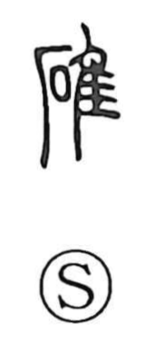

礁

Kun: | On: sho
reef ・ sunken rock
Explanation
A phono-semantic character: the stone radical marks the sense of rock, while the phonetic element 焦 supplies the on reading shō. It denotes reefs—rocks that lurk at or just beneath the water’s surface, appearing and disappearing with the waves. Because they are hard to discern, they are called 暗礁 (“hidden reef”), and when a vessel strikes one it is said to 座礁 (“run aground”). Coral-built reefs are 珊瑚礁, ring-shaped coral reefs are 環礁 (atolls), and 魚礁・漁礁 refers to underwater reef structures—often stones or concrete blocks—sunk to create habitat where fish gather.